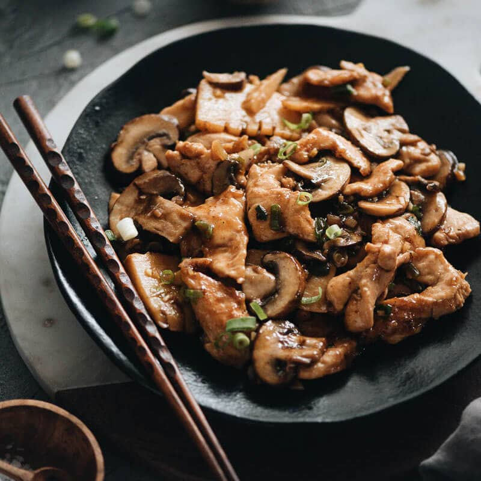

Shitake Mushrooms

Description
A hearty chicken dish cooked in a creamy mushroom sauce.
Ingriedients
- olive oil
- boneless skinless chicken breasts
- shallots
- mushrooms
- fresh thyme
- dry white wine
- half and half
Steps
- Start by heating olive oil in a large skillet. Once it’s hot add in your seasoned chicken breasts. Brown them on the first side for several minutes and then flip and cook on the other side until they’re cooked through.
- Remove the chicken onto a plate and add the remaining olive oil into the skillet. Add in the shallots, mushrooms and thyme and sauté for several minutes until they’ve softened. Pour in the wine and cook for another couple minutes. Stir in the the half and half until the sauce is heated through and simmering.
- Add the chicken back into the skillet and coat it with the sauce. You can garnish with chopped thyme and parsley if you’d like. See some serving suggestions below or eat it as is out of the skillet.
- Enjoy!